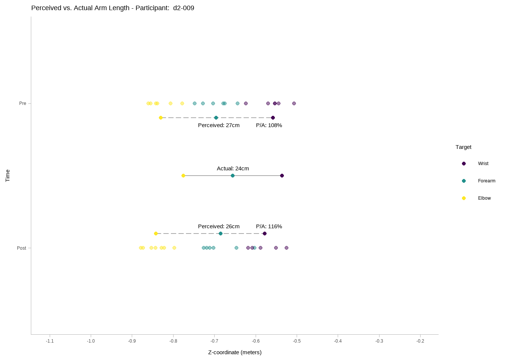

# A tibble: 2 × 2
time m_length
<chr> <dbl>
1 post 110
2 pre 113[1] 55




# A tibble: 2 × 2
time m_length
<chr> <dbl>
1 post 112
2 pre 117landmark %>%
ggplot(
aes(
x = error,
y = target,
color = direction,
fill = direction
)
) +
stat_dotsinterval(
alpha = .6,
position = position_dodge(width = .1),
interval_alpha = 1,
point_size = 4.5) +
scale_color_viridis_d() +
scale_fill_viridis_d() +
theme_tidybayes()landmark %>%
ggplot(
aes(
x = lapse_fix_error,
y = target,
color = direction,
fill = direction
)
) +
stat_dotsinterval(
alpha = .6,
position = position_dodge(width = .1),
interval_alpha = 1,
point_size = 4.5) +
scale_color_viridis_d() +
scale_fill_viridis_d() +
theme_tidybayes()as.data.table(armlength_df)[order(ratio, decreasing = TRUE)] ppid time armlength perceived veridical ratio
1: d2-015 Pre 19 0.3685500 0.1962222 188
2: d2-015 Post 19 0.3429000 0.1922278 178
3: d2-001 Pre 23 0.3621333 0.2247222 161
4: d2-006 Pre 24 0.3777500 0.2370167 159
5: d2-010 Post 20 0.3053333 0.1985500 154
6: d2-010 Pre 20 0.2896167 0.1964333 147
7: d2-017 Pre 22 0.3153667 0.2212278 143
8: d2-018 Post 22 0.3215667 0.2261722 142
9: d2-018 Pre 22 0.3146500 0.2226722 141
10: d2-017 Post 22 0.3029833 0.2214444 137
11: d2-025 Post 17 0.2306333 0.1719056 134
12: d2-016 Pre 17 0.2139333 0.1692944 126
13: d2-024 Post 22 0.2853500 0.2258333 126
14: d2-001 Post 23 0.2853167 0.2298778 124
15: d2-016 Post 17 0.2124667 0.1780556 119
16: d2-024 Pre 22 0.2612167 0.2187056 119
17: d2-002 Pre 22 0.2661833 0.2252833 118
18: d2-008 Post 23 0.2655167 0.2245444 118
19: d2-013 Pre 25 0.3053333 0.2589778 118
20: d2-006 Post 24 0.2773000 0.2372167 117
21: d2-023 Pre 18 0.2069333 0.1801556 115
22: d2-025 Pre 17 0.2012667 0.1752833 115
23: d2-020 Post 19 0.2210667 0.1941889 114
24: d2-008 Pre 23 0.2560500 0.2268000 113
25: d2-011 Pre 21 0.2385000 0.2109778 113
26: d2-019 Post 22 0.2494000 0.2231000 112
27: d2-003 Post 24 0.2677167 0.2424722 110
28: d2-002 Post 22 0.2443833 0.2244722 109
29: d2-004 Post 21 0.2263833 0.2088778 108
30: d2-009 Pre 24 0.2718000 0.2528056 108
31: d2-022 Post 22 0.2299500 0.2169889 106
32: d2-005 Post 22 0.2086500 0.2191333 95
33: d2-014 Pre 24 0.2302667 0.2430056 95
34: d2-003 Pre 24 0.2299167 0.2450389 94
35: d2-022 Pre 22 0.2052500 0.2198889 93
36: d2-023 Post 18 0.1722667 0.1852722 93
37: d2-007 Pre 24 0.2166000 0.2362222 92
38: d2-009 Post 24 0.2082000 0.2269611 92
39: d2-014 Post 24 0.2239167 0.2453222 91
40: d2-020 Pre 19 0.1742500 0.1917833 91
41: d2-005 Pre 22 0.1950833 0.2207000 88
42: d2-007 Post 24 0.2106167 0.2396056 88
43: d2-021 Pre 29 0.2470833 0.2794778 88
44: d2-011 Post 21 0.1861000 0.2161944 86
45: d2-012 Pre 23 0.1917833 0.2249222 85
46: d2-012 Post 23 0.1896333 0.2288611 83
47: d2-019 Pre 22 0.1809167 0.2202778 82
48: d2-021 Post 29 0.2262000 0.3074556 74
49: d2-013 Post 25 0.1762500 0.2422944 73
50: d2-004 Pre 21 0.1093000 0.2129389 51
ppid time armlength perceived veridical ratioas.data.table(change_df)[order(veridical_change, decreasing = TRUE)] ppid veridical_change perceived_change
1: d2-009 0.026 0.064
2: d2-013 0.017 0.129
3: d2-004 0.004 -0.117
4: d2-015 0.004 0.026
5: d2-003 0.003 -0.038
6: d2-022 0.003 -0.025
7: d2-025 0.003 -0.029
8: d2-005 0.002 -0.014
9: d2-008 0.002 -0.009
10: d2-002 0.001 0.022
11: d2-006 0.000 0.100
12: d2-017 0.000 0.012
13: d2-010 -0.002 -0.016
14: d2-014 -0.002 0.006
15: d2-020 -0.002 -0.047
16: d2-007 -0.003 0.006
17: d2-019 -0.003 -0.068
18: d2-012 -0.004 0.002
19: d2-018 -0.004 -0.007
20: d2-001 -0.005 0.077
21: d2-011 -0.005 0.052
22: d2-023 -0.005 0.035
23: d2-024 -0.007 -0.024
24: d2-016 -0.009 0.001
25: d2-021 -0.028 0.021
ppid veridical_change perceived_changeas.data.table(change_df)[, .(abs_change = perceived_change + veridical_change)][
order(abs_change, decreasing = TRUE)
] abs_change
1: 0.146
2: 0.100
3: 0.090
4: 0.072
5: 0.047
6: 0.030
7: 0.030
8: 0.023
9: 0.012
10: 0.004
11: 0.003
12: -0.002
13: -0.007
14: -0.007
15: -0.008
16: -0.011
17: -0.012
18: -0.018
19: -0.022
20: -0.026
21: -0.031
22: -0.035
23: -0.049
24: -0.071
25: -0.113
abs_changelandmark[,
.(
variability = sd(error),
variability_as_ratio = sd(error) / mean(forearmlength)
),
by = c("ppid")
][order(variability, decreasing = T)] ppid variability variability_as_ratio
1: d2-004 0.09713555 0.45476628
2: d2-006 0.08615440 0.35753657
3: d2-001 0.08065052 0.35010054
4: d2-010 0.07690866 0.38625460
5: d2-015 0.07306409 0.36864335
6: d2-009 0.07180086 0.29633042
7: d2-011 0.06452817 0.29751335
8: d2-018 0.05162265 0.22691552
9: d2-024 0.05067237 0.22501886
10: d2-013 0.04955133 0.19601002
11: d2-017 0.04668163 0.20422147
12: d2-021 0.04623768 0.15683535
13: d2-019 0.04555321 0.20284685
14: d2-020 0.04475998 0.22777972
15: d2-023 0.04419671 0.23431684
16: d2-008 0.04242736 0.18530601
17: d2-016 0.04063554 0.22800135
18: d2-025 0.03984749 0.22530737
19: d2-007 0.03839486 0.15876032
20: d2-012 0.03648888 0.15950648
21: d2-005 0.03465307 0.15486446
22: d2-002 0.03223325 0.14136702
23: d2-022 0.03139457 0.14280898
24: d2-014 0.02660077 0.10648236
25: d2-003 0.02410134 0.09765867
ppid variability variability_as_ratiolandmark[,
.(
variability_lf = sd(lapse_fix_error),
variability_as_ratio_lf = sd(lapse_fix_error) / mean(forearmlength),
lapsefix_improvement = sd(error) - sd(lapse_fix_error)
),
by = c("ppid")
][order(variability_lf, decreasing = T)] ppid variability_lf variability_as_ratio_lf lapsefix_improvement
1: d2-015 0.07306409 0.36864335 0.0000000000
2: d2-010 0.07288075 0.36602546 0.0040279028
3: d2-001 0.07054815 0.30624657 0.0101023719
4: d2-006 0.06693237 0.27776608 0.0192220284
5: d2-004 0.05464117 0.25581737 0.0424943821
6: d2-016 0.05393752 0.30263721 -0.0133019770
7: d2-018 0.05162265 0.22691552 0.0000000000
8: d2-009 0.05018151 0.20710485 0.0216193544
9: d2-013 0.04955133 0.19601002 0.0000000000
10: d2-019 0.04731410 0.21068805 -0.0017608931
11: d2-017 0.04668163 0.20422147 0.0000000000
12: d2-021 0.04623768 0.15683535 0.0000000000
13: d2-025 0.04337628 0.24526005 -0.0035287969
14: d2-024 0.04288358 0.19043146 0.0077887930
15: d2-020 0.04009039 0.20401656 0.0046695936
16: d2-023 0.03851441 0.20419108 0.0056823045
17: d2-007 0.03839486 0.15876032 0.0000000000
18: d2-012 0.03648888 0.15950648 0.0000000000
19: d2-008 0.03630863 0.15858180 0.0061187297
20: d2-005 0.03378013 0.15096326 0.0008729486
21: d2-022 0.03139457 0.14280898 0.0000000000
22: d2-011 0.03033017 0.13984016 0.0341980014
23: d2-014 0.02660077 0.10648236 0.0000000000
24: d2-002 0.02450883 0.10748963 0.0077244218
25: d2-003 0.02410134 0.09765867 0.0000000000
ppid variability_lf variability_as_ratio_lf lapsefix_improvement